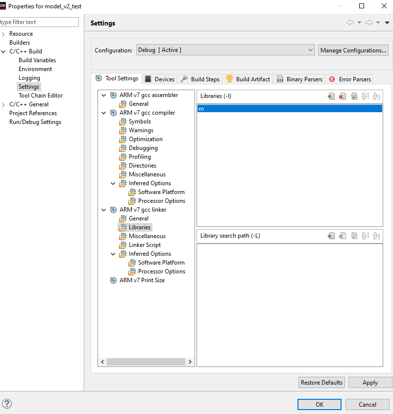
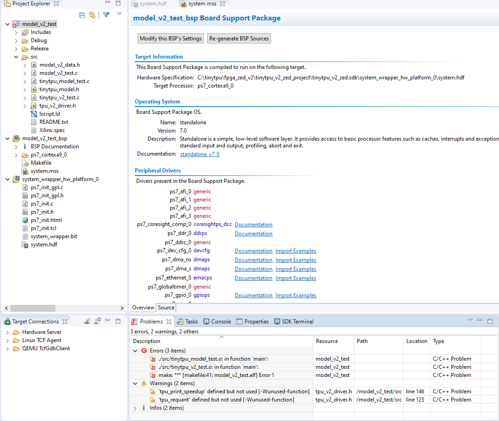

Every run follows the same four stages. Vivado holds the hardware: the block design, the bitstream and the hardware export. The SDK holds the software: one ARM application per test program. The board runs both, and the results arrive on a serial terminal.
| Version 1 | Version 2 | |
|---|---|---|
| Folder | tinytpu\fpga_zed | tinytpu\fpga_zed_v2 |
| Project file | tinytpu_zed_project\tinytpu_zed.xpr | tinytpu_v2_zed_project\tinytpu_v2_zed.xpr |
| Script that makes it | create_tinytpu_zed_project.tcl | create_tinytpu_v2_zed_project.tcl |
| Hardware | 1 INT4 PE, 16-bit sum | 2 INT8 PEs, on-chip bias / rescale / ReLU |
| Clock | 100 MHz | 50 MHz (100 MHz misses timing) |
| Test programs | tinytpu_model_test, tinytpu_test | model_v2_test, tinytpu_model_test, tinytpu_v2_test |
The project files and bitstreams are build output and are not in git. On a PC that has never built them, start with "Make the project from the script" below.
.xpr from the table.<project>.runs\impl_1\system_wrapper.bit.0x43C00000, the TPU_BASE in every test program.create_…_project.tcl. It makes the project and the block design: Zynq processing system, then AXI interconnect, then the Tiny-TPU wrapper. The Tcl Console should end with Block design 'system' built and the address 0x43C00000.FCLK_MHZ near the top of the script and run it again.The script replaces the project. It runs create_project -force, so running it again deletes the project, its bitstream and the SDK workspace inside it. Only run it to rebuild from scratch. If you work from a copy of the folder, as the 16 Nov run did from C:\tinytpu, copy it after the latest changes so sw\ has every file listed below.
<Local to Project>, then OK. Overwrite if asked. This writes system_wrapper.hdf into the project's .sdk folder.<Local to Project>. The SDK opens on that .sdk folder and makes the hardware platform project system_wrapper_hw_platform_0. It holds the bitstream, ps7_init and system.hdf.Each test program is a complete program with its own main(), so each gets its own application. The source files are in the project folder's sw\ subfolder.
| Project | Application | Import these files from sw\, and nothing else | Needs m |
|---|---|---|---|
| V1 | tinytpu_model_test | tinytpu_model_test.c, tinytpu_model.h | no |
| V1 | tinytpu_test | tinytpu_test.c, model_data.h | yes |
| V2 | model_v2_test | model_v2_test.c, model_v2_data.h, tpu_v2_driver.h | no |
| V2 | tinytpu_model_test | tinytpu_model_test.c, tinytpu_model.h, tpu_v2_driver.h | no |
| V2 | tinytpu_v2_test | tinytpu_v2_test.c, model_v2_data.h | yes |
For each application in the table:
system_wrapper_hw_platform_0, Processor ps7_cortexa9_0, Language C.model_v2_test_bsp.src folder, , browse to sw\ and tick only the files the table lists. Leave "Create links" unticked, so the files are copied.m with the green + button, then Apply..elf appears under Release\.
m under ARM v7 gcc linker › Libraries. Here the Configuration box at the top says Debug [Active], so m only reaches the Debug build. Choose [ All configurations ] before adding it.Importing all of sw\ into one application puts two or three main() functions in it, and the build fails with multiple definition of 'main' and make: *** … Error 1. To fix it, delete the extra .c files and their headers from src (right-click › Delete), then run . Make the other programs as their own applications.

tinytpu_model_test.o and tinytpu_v2_test.o "in function main". Keep only model_v2_test.c, model_v2_data.h and tpu_v2_driver.h in this one.system_wrapper.bit.ps7_cortexa9_0 must run this application's Release .elf.| Project | Application | The terminal must end with |
|---|---|---|
| V1 | tinytpu_model_test | ALL TINY-TPU MODEL TESTS PASSED (2/2) |
| V1 | tinytpu_test | ALL TINY-TPU TESTS PASSED (5/5) |
| V2 | model_v2_test | ALL MODEL TESTS PASSED (3/3) |
| V2 | tinytpu_model_test | ALL TINY-TPU MODEL TESTS PASSED (3/3) |
| V2 | tinytpu_v2_test | ALL TINY-TPU V2 TESTS PASSED (8/8) |
All five passed on 16 Nov 2026 (document 16). On these boards the ARM alone is faster than the Tiny-TPU core, because the whole model crosses the bus for every row. That's expected: the runs prove the chip's arithmetic.
Neither Vivado project has a simulation testbench, so Vivado's Run Simulation has nothing to run. Each folder has sim\xsim_cosim\run_xsim_cosim.bat instead. From a Command Prompt, run_xsim_cosim.bat model_v2_test (or another program name) runs the board program, unchanged, against that project's RTL in Vivado's simulator. It prints the same lines the terminal would.
The same four stages also run without any windows: build_bitstream.tcl, sdk_build.tcl and run_on_board.tcl <program>, described in each folder's README.
| What you see | What to do |
|---|---|
| multiple definition of 'main' | Two programs in one application. Keep one .c per application (Stage 3). |
| undefined reference to rint, fabs or exp | Add m to the linker libraries for the configuration you build, or for All configurations. |
| tinytpu_model.h or tpu_v2_driver.h: No such file | A file from the table wasn't imported, or the folder copy is older than 16 Nov. Import it from sw\. |
| defined but not used [-Wunused-function] | A harmless warning from an older tpu_v2_driver.h. The current one fixes it. |
| Core not found / PE not found at 0x43c00000 | The FPGA holds another bitstream, or the address differs. Tick Program FPGA and check the Address Editor against TPU_BASE. |
| Run: no target / cannot connect | Check the J17 cable, power and JTAG jumpers. Close Vivado's Hardware Manager if it holds the cable. |
| Nothing on the terminal | Wrong COM port or speed. Use J14 at 115200 8N1, opened before Run. |
| The SDK says the hardware changed | After a new bitstream, export again (Stage 2), accept the update to system_wrapper_hw_platform_0, and rebuild the applications. |
| Timing fails after a change | Lower FCLK_MHZ in the create script. Keep V2 at 50 MHz; its post-processing path tops out near 79 MHz. |
Vivado and SDK 2019.1 menu names. The screenshots are from the 16 Nov 2026 session.